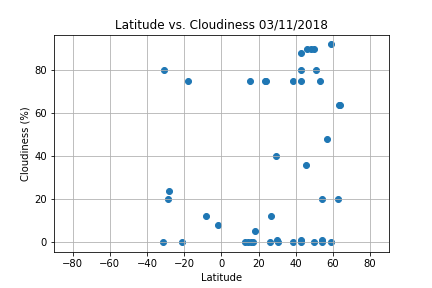
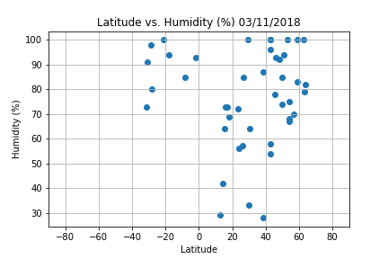
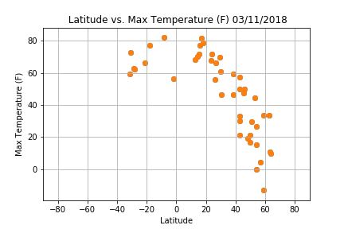
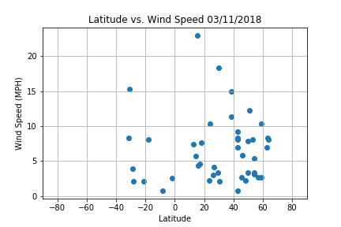

WeatherPy is a Weather Analysis Report Using Pandas, Matplotlib and the OpenWeatherMap API




There seems to a visible temperature drop in the latitude range of 40-60 (Northern hemisphere). Also, every 20 degrees in latitude is roughly a 20 degrees drop in temperature(F).
The highest concentration of humidity appears to occur in cities located between the 40-60 latitude range (Northern hemisphere). I don't believe there is any relationship between latitude and cloudiness, but based on the plot graph, there are several cities that collect at 0%, 80% and 100%.
Cities located in latitudes of the 40-60 range (Northern hemisphere) seem to report the highest wind speed.